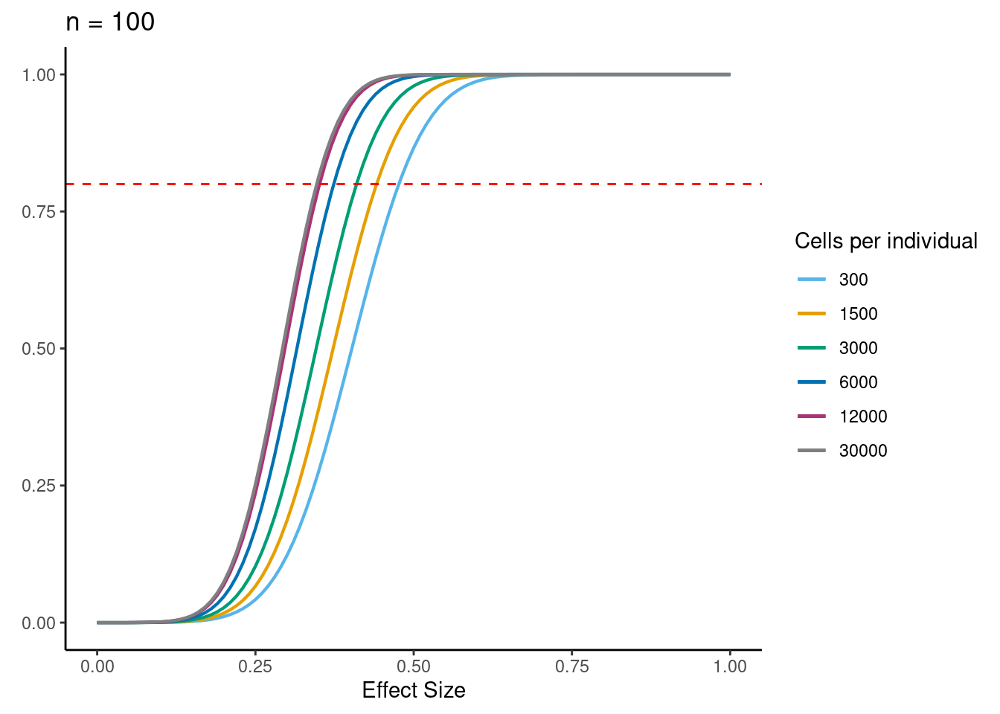

Last updated: 2021-07-04
Checks: 6 1
Knit directory: Embryoid_Body_Pilot_Workflowr/analysis/
This reproducible R Markdown analysis was created with workflowr (version 1.6.2). The Checks tab describes the reproducibility checks that were applied when the results were created. The Past versions tab lists the development history.
Great! Since the R Markdown file has been committed to the Git repository, you know the exact version of the code that produced these results.
Great job! The global environment was empty. Objects defined in the global environment can affect the analysis in your R Markdown file in unknown ways. For reproduciblity it's best to always run the code in an empty environment.
The command set.seed(20200804) was run prior to running the code in the R Markdown file. Setting a seed ensures that any results that rely on randomness, e.g. subsampling or permutations, are reproducible.
Great job! Recording the operating system, R version, and package versions is critical for reproducibility.
Nice! There were no cached chunks for this analysis, so you can be confident that you successfully produced the results during this run.
Using absolute paths to the files within your workflowr project makes it difficult for you and others to run your code on a different machine. Change the absolute path(s) below to the suggested relative path(s) to make your code more reproducible.
| absolute | relative |
|---|---|
| /project2/gilad/katie/Pilot_HumanEBs/Embryoid_Body_Pilot_Workflowr/output/downsamp_2700cells_10subreps_medianexplainedbyresiduals_varpart_PsB.rds | ../output/downsamp_2700cells_10subreps_medianexplainedbyresiduals_varpart_PsB.rds |
| /project2/gilad/katie/Pilot_HumanEBs/Embryoid_Body_Pilot_Workflowr/output/downsamp_5400cells_10subreps_medianexplainedbyresiduals_varpart_PsB.rds | ../output/downsamp_5400cells_10subreps_medianexplainedbyresiduals_varpart_PsB.rds |
| /project2/gilad/katie/Pilot_HumanEBs/Embryoid_Body_Pilot_Workflowr/output/downsamp_7200cells_10subreps_medianexplainedbyresiduals_varpart_PsB.rds | ../output/downsamp_7200cells_10subreps_medianexplainedbyresiduals_varpart_PsB.rds |
| /project2/gilad/katie/Pilot_HumanEBs/Embryoid_Body_Pilot_Workflowr/output/downsamp_10800cells_10subreps_medianexplainedbyresiduals_varpart_PsB.rds | ../output/downsamp_10800cells_10subreps_medianexplainedbyresiduals_varpart_PsB.rds |
| /project2/gilad/katie/Pilot_HumanEBs/Embryoid_Body_Pilot_Workflowr/output/downsamp_16200cells_10subreps_medianexplainedbyresiduals_varpart_PsB.rds | ../output/downsamp_16200cells_10subreps_medianexplainedbyresiduals_varpart_PsB.rds |
| /project2/gilad/katie/Pilot_HumanEBs/Embryoid_Body_Pilot_Workflowr/output/downsamp_21600cells_10subreps_medianexplainedbyresiduals_varpart_PsB.rds | ../output/downsamp_21600cells_10subreps_medianexplainedbyresiduals_varpart_PsB.rds |
| /project2/gilad/katie/Pilot_HumanEBs/Embryoid_Body_Pilot_Workflowr/output/ResidualVariances_fromDownSampAnalysis.csv | ../output/ResidualVariances_fromDownSampAnalysis.csv |
| /project2/gilad/katie/Pilot_HumanEBs/Embryoid_Body_Pilot_Workflowr/output/figs/Fig5_DownSamp_Power.png | ../output/figs/Fig5_DownSamp_Power.png |
Great! You are using Git for version control. Tracking code development and connecting the code version to the results is critical for reproducibility.
The results in this page were generated with repository version 068f5cb. See the Past versions tab to see a history of the changes made to the R Markdown and HTML files.
Note that you need to be careful to ensure that all relevant files for the analysis have been committed to Git prior to generating the results (you can use wflow_publish or wflow_git_commit). workflowr only checks the R Markdown file, but you know if there are other scripts or data files that it depends on. Below is the status of the Git repository when the results were generated:
Ignored files:
Ignored: .Rhistory
Ignored: .Rproj.user/
Ignored: analysis/.Rhistory
Ignored: output/.Rhistory
Untracked files:
Untracked: GSE122380_raw_counts.txt.gz
Untracked: UTF1_plots.Rmd
Untracked: analysis/IntegrateReference_SCTregressCaoPlusScHCL.Rmd
Untracked: analysis/IntegrateReference_SCTregressCaoPlusScHCL_JustEarlyEcto.Rmd
Untracked: analysis/IntegrateReference_SCTregressCaoPlusScHCL_JustEndo.Rmd
Untracked: analysis/IntegrateReference_SCTregressCaoPlusScHCL_JustMeso.Rmd
Untracked: analysis/IntegrateReference_SCTregressCaoPlusScHCL_JustNeuralCrest.Rmd
Untracked: analysis/IntegrateReference_SCTregressCaoPlusScHCL_JustNeuron.Rmd
Untracked: analysis/IntegrateReference_SCTregressCaoPlusScHCL_JustPluri.Rmd
Untracked: analysis/OLD/
Untracked: analysis/Pseudobulk_Limma_Harmony.BatchIndividual_ClusterRes0.8_minPCT0.2.Rmd
Untracked: analysis/Pseudobulk_Limma_Harmony.BatchIndividual_ClusterRes1_minPCT0.2.Rmd
Untracked: analysis/Pseudobulk_VariancePartition_Harmony.Batchindividual_ClusterRes0.1_byCluster.Rmd
Untracked: analysis/RefInt_ComparingFulltoPartialIntegrationAnnotations.Rmd
Untracked: analysis/ReferenceAnn_DE.Rmd
Untracked: analysis/SingleCell_HierarchicalClustering_NoGeneFilter.Rmd
Untracked: analysis/SingleCell_VariancePartitionByCluster_Harmony.Batchindividual_ClusterRes0.1_minPCT0.2.Rmd
Untracked: analysis/VarPartPlots_res0.1_SCT.Rmd
Untracked: analysis/VarPart_SC_res0.1_SCT.Rmd
Untracked: analysis/child/
Untracked: analysis/k10topics_Explore.Rmd
Untracked: analysis/k6topics_Explore.Rmd
Untracked: build_refint_scale.R
Untracked: build_refint_sct.R
Untracked: build_stuff.R
Untracked: build_varpart_sc.R
Untracked: code/.ipynb_checkpoints/
Untracked: code/CellRangerPreprocess.Rmd
Untracked: code/ConvertToDGE.Rmd
Untracked: code/ConvertToDGE_PseudoBulk.Rmd
Untracked: code/ConvertToDGE_SingleCellRes_minPCT0.2.Rmd
Untracked: code/EB.getHumanMetadata.Rmd
Untracked: code/GEO_processed_data.Rmd
Untracked: code/PowerAnalysis_NoiseRatio.ipynb
Untracked: code/Untitled.ipynb
Untracked: code/Untitled1.ipynb
Untracked: code/compile_fits.Rmd
Untracked: code/fit_all_models.sh
Untracked: code/fit_poisson_nmf.R
Untracked: code/fit_poisson_nmf.sbatch
Untracked: code/functions_for_fit_comparison.Rmd
Untracked: code/get_genelist_byPCTthresh.Rmd
Untracked: code/prefit_poisson_nmf.R
Untracked: code/prefit_poisson_nmf.sbatch
Untracked: code/prepare_data_for_fastTopics.Rmd
Untracked: data/HCL_Fig1_adata.h5ad
Untracked: data/HCL_Fig1_adata.h5seurat
Untracked: data/dge/
Untracked: data/dge_raw_data.tar.gz
Untracked: data/ref.expr.rda
Untracked: figure/
Untracked: output/CR_sampleQCrds/
Untracked: output/CaoEtAl.Obj.CellsOfAllClusters.ProteinCodingGenes.rds
Untracked: output/CaoEtAl.Obj.rds
Untracked: output/ClusterInfo_res0.1.csv
Untracked: output/DGELists/
Untracked: output/DownSampleVarPart.rds
Untracked: output/Frequency.MostCommonAnnotation.FiveNearestRefCells.csv
Untracked: output/GEOsubmissionProcessedFiles/
Untracked: output/GeneLists_by_minPCT/
Untracked: output/MostCommonAnnotation.FiveNearestRefCells.csv
Untracked: output/NearestReferenceCell.Cao.hESC.EuclideanDistanceinHarmonySpace.csv
Untracked: output/NearestReferenceCell.Cao.hESC.FrequencyofEachAnnotation.csv
Untracked: output/NearestReferenceCell.SCTregressRNAassay.Cao.hESC.EuclideanDistanceinHarmonySpace.csv
Untracked: output/NearestReferenceCell.SCTregressRNAassay.Cao.hESC.FrequencyofEachAnnotation.csv
Untracked: output/Pseudobulk_Limma_res0.1_OnevAllTopTables.csv
Untracked: output/Pseudobulk_Limma_res0.1_OnevAll_top10Upregby_adjP.csv
Untracked: output/Pseudobulk_Limma_res0.1_OnevAll_top10Upregby_logFC.csv
Untracked: output/Pseudobulk_Limma_res0.5_OnevAllTopTables.csv
Untracked: output/Pseudobulk_Limma_res0.8_OnevAllTopTables.csv
Untracked: output/Pseudobulk_Limma_res1_OnevAllTopTables.csv
Untracked: output/Pseudobulk_VarPart.ByCluster.Res0.1.rds
Untracked: output/ResidualVariances_fromDownSampAnalysis.csv
Untracked: output/SingleCell_VariancePartition_RNA_Res0.1_minPCT0.2.rds
Untracked: output/SingleCell_VariancePartition_Res0.1_minPCT0.2.rds
Untracked: output/SingleCell_VariancePartition_SCT_Res0.1_minPCT0.2.rds
Untracked: output/TopicModelling_k10_top10drivergenes.byBeta.csv
Untracked: output/TopicModelling_k6_top10drivergenes.byBeta.csv
Untracked: output/TopicModelling_k6_top15drivergenes.byZ.csv
Untracked: output/TranferredAnnotations_ReferenceInt_JustEarlyEcto.csv
Untracked: output/TranferredAnnotations_ReferenceInt_JustEndoderm.csv
Untracked: output/TranferredAnnotations_ReferenceInt_JustMeso.csv
Untracked: output/TranferredAnnotations_ReferenceInt_JustNeuralCrest.csv
Untracked: output/TranferredAnnotations_ReferenceInt_JustNeuron.csv
Untracked: output/TranferredAnnotations_ReferenceInt_JustPluripotent.csv
Untracked: output/VarPart.ByCluster.Res0.1.rds
Untracked: output/azimuth/
Untracked: output/downsamp_10800cells_10subreps_medianexplainedbyresiduals_varpart_PsB.rds
Untracked: output/downsamp_16200cells_10subreps_medianexplainedbyresiduals_varpart_PsB.rds
Untracked: output/downsamp_21600cells_10subreps_medianexplainedbyresiduals_varpart_PsB.rds
Untracked: output/downsamp_2700cells_10subreps_medianexplainedbyresiduals_varpart_PsB.rds
Untracked: output/downsamp_2700cells_10subreps_medianexplainedbyresiduals_varpart_scres.rds
Untracked: output/downsamp_5400cells_10subreps_medianexplainedbyresiduals_varpart_PsB.rds
Untracked: output/downsamp_7200cells_10subreps_medianexplainedbyresiduals_varpart_PsB.rds
Untracked: output/fasttopics/
Untracked: output/figs/
Untracked: output/merge.Cao.SCTwRegressOrigIdent.rds
Untracked: output/merge.all.SCTwRegressOrigIdent.Harmony.rds
Untracked: output/merged.SCT.counts.matrix.rds
Untracked: output/merged.raw.counts.matrix.rds
Untracked: output/mergedObjects/
Untracked: output/pdfs/
Untracked: output/sampleQCrds/
Untracked: output/splitgpm_gsea_results/
Untracked: slurm-12005914.out
Untracked: slurm-12005923.out
Unstaged changes:
Deleted: analysis/IntegrateAnalysis.afterFilter.HarmonyBatch.Rmd
Deleted: analysis/IntegrateAnalysis.afterFilter.HarmonyBatchSampleIDindividual.Rmd
Modified: analysis/IntegrateAnalysis.afterFilter.HarmonyBatchindividual.Rmd
Deleted: analysis/IntegrateAnalysis.afterFilter.NOHARMONYjustmerge.Rmd
Deleted: analysis/IntegrateAnalysis.afterFilter.SCTregressBatchIndividual.Rmd
Deleted: analysis/IntegrateAnalysis.afterFilter.SCTregressBatchIndividualHarmonyBatchindividual.Rmd
Modified: analysis/Pseudobulk_HierarchicalClustering_Harmony.Batchindividual_ClusterRes0.1_minPCT0.2.Rmd
Modified: analysis/Pseudobulk_HierarchicalClustering_Harmony.Batchindividual_ClusterRes0.5_minPCT0.2.Rmd
Modified: analysis/Pseudobulk_HierarchicalClustering_Harmony.Batchindividual_ClusterRes0.8_minPCT0.2.Rmd
Modified: analysis/Pseudobulk_HierarchicalClustering_Harmony.Batchindividual_ClusterRes1_minPCT0.2.Rmd
Modified: analysis/Pseudobulk_Limma_Harmony.BatchIndividual_ClusterRes0.1_minPCT0.2.Rmd
Modified: analysis/Pseudobulk_Limma_Harmony.BatchIndividual_ClusterRes0.5_minPCT0.2.Rmd
Modified: analysis/Pseudobulk_VariancePartition_Harmony.Batchindividual_ClusterRes0.1_minPCT0.2.Rmd
Modified: analysis/Pseudobulk_VariancePartition_Harmony.Batchindividual_ClusterRes0.5_minPCT0.2.Rmd
Modified: analysis/Pseudobulk_VariancePartition_Harmony.Batchindividual_ClusterRes0.8_minPCT0.2.Rmd
Modified: analysis/Pseudobulk_VariancePartition_Harmony.Batchindividual_ClusterRes1_minPCT0.2.Rmd
Deleted: analysis/RunscHCL_HarmonyBatchInd.Rmd
Note that any generated files, e.g. HTML, png, CSS, etc., are not included in this status report because it is ok for generated content to have uncommitted changes.
These are the previous versions of the repository in which changes were made to the R Markdown (analysis/DownSamp_NoiseRatio.Rmd) and HTML (docs/DownSamp_NoiseRatio.html) files. If you've configured a remote Git repository (see ?wflow_git_remote), click on the hyperlinks in the table below to view the files as they were in that past version.
| File | Version | Author | Date | Message |
|---|---|---|---|---|
| Rmd | 068f5cb | KLRhodes | 2021-07-04 | wflow_publish(c("analysis/CompiledFits_BatchvInd.Rmd", "analysis/DownSamp_NoiseRatio.Rmd", |
library(Seurat)
library(variancePartition)Loading required package: ggplot2Loading required package: limmaLoading required package: foreachLoading required package: scalesLoading required package: BiobaseLoading required package: BiocGenericsLoading required package: parallel
Attaching package: 'BiocGenerics'The following objects are masked from 'package:parallel':
clusterApply, clusterApplyLB, clusterCall, clusterEvalQ,
clusterExport, clusterMap, parApply, parCapply, parLapply,
parLapplyLB, parRapply, parSapply, parSapplyLBThe following object is masked from 'package:limma':
plotMAThe following objects are masked from 'package:stats':
IQR, mad, sd, var, xtabsThe following objects are masked from 'package:base':
Filter, Find, Map, Position, Reduce, anyDuplicated, append,
as.data.frame, basename, cbind, colnames, dirname, do.call,
duplicated, eval, evalq, get, grep, grepl, intersect, is.unsorted,
lapply, mapply, match, mget, order, paste, pmax, pmax.int, pmin,
pmin.int, rank, rbind, rownames, sapply, setdiff, sort, table,
tapply, union, unique, unsplit, which, which.max, which.minWelcome to Bioconductor
Vignettes contain introductory material; view with
'browseVignettes()'. To cite Bioconductor, see
'citation("Biobase")', and for packages 'citation("pkgname")'.
Attaching package: 'variancePartition'The following object is masked from 'package:limma':
classifyTestsFlibrary(edgeR)
library(scater)Loading required package: SingleCellExperimentLoading required package: SummarizedExperimentLoading required package: GenomicRangesLoading required package: stats4Loading required package: S4Vectors
Attaching package: 'S4Vectors'The following object is masked from 'package:base':
expand.gridLoading required package: IRangesLoading required package: GenomeInfoDbLoading required package: DelayedArrayLoading required package: matrixStats
Attaching package: 'matrixStats'The following objects are masked from 'package:Biobase':
anyMissing, rowMediansLoading required package: BiocParallel
Attaching package: 'DelayedArray'The following objects are masked from 'package:matrixStats':
colMaxs, colMins, colRanges, rowMaxs, rowMins, rowRangesThe following objects are masked from 'package:base':
aperm, apply, rowsum
Attaching package: 'SummarizedExperiment'The following object is masked from 'package:Seurat':
Assays
Attaching package: 'SingleCellExperiment'The following object is masked from 'package:edgeR':
cpm
Attaching package: 'scater'The following object is masked from 'package:limma':
plotMDSlibrary(ggplot2)
library(dplyr)
Attaching package: 'dplyr'The following object is masked from 'package:matrixStats':
countThe following objects are masked from 'package:GenomicRanges':
intersect, setdiff, unionThe following object is masked from 'package:GenomeInfoDb':
intersectThe following objects are masked from 'package:IRanges':
collapse, desc, intersect, setdiff, slice, unionThe following objects are masked from 'package:S4Vectors':
first, intersect, rename, setdiff, setequal, unionThe following object is masked from 'package:Biobase':
combineThe following objects are masked from 'package:BiocGenerics':
combine, intersect, setdiff, unionThe following objects are masked from 'package:stats':
filter, lagThe following objects are masked from 'package:base':
intersect, setdiff, setequal, unionlibrary(broom)
library(reshape2)
library(patchwork)choose parameters (integration type, clustering res, min pct threshold)
f<- 'Harmony.Batchindividual'
pct<-0.2
res<- 'SCT_snn_res.1'path<- here::here("output/mergedObjects/")
merged<- readRDS(paste0(path,f, ".rds"))subset cells, run variance partition to see the effect of experiment size (total number of cells) on median variance explained by residuals
subsetting cells evenly between replicates and individuals
using clusters defined at res 1 (28 clusters), not subsetting equally between clusters
downsampling to total cell counts of 2700,5400,10800,21600 (only numbers divisible by 9, equal cell numbers from each group. only 2418 cells came from 19160 in Batch2, so the max cells we can test using this approach is ~21000 to still have equal cells from each individual/batch group)
rep_subsamp<- function(ncells, nreps){
set.seed(1)
cellids<- list()
#take even numbers of cells from each replicate and individual (9 total groups)
npergroup<- ncells/9
metsub<- merged@meta.data
n<-0
repeat{
sizegroup<- c()
for (k in 1:3){
ind<- unique(metsub$individual)[k]
sub<- metsub[metsub$individual == ind,]
for(g in 1:3){
repl<- unique(metsub$Batch)[g]
cells<- rownames(sub[sub$Batch == repl,])
samp<- sample(cells, npergroup, replace=FALSE)
sizegroup<- c(sizegroup, samp)
}
}
n<- n+1
print(n)
cellids[[n]]<- sizegroup
if(n > (nreps-1)){
break
}
}
return(cellids)
}subone<- rep_subsamp(2700,10)[1] 1
[1] 2
[1] 3
[1] 4
[1] 5
[1] 6
[1] 7
[1] 8
[1] 9
[1] 10subtwo<- rep_subsamp(5400,10)[1] 1
[1] 2
[1] 3
[1] 4
[1] 5
[1] 6
[1] 7
[1] 8
[1] 9
[1] 10subthree<- rep_subsamp(7200,10)[1] 1
[1] 2
[1] 3
[1] 4
[1] 5
[1] 6
[1] 7
[1] 8
[1] 9
[1] 10subfour<- rep_subsamp(10800,10)[1] 1
[1] 2
[1] 3
[1] 4
[1] 5
[1] 6
[1] 7
[1] 8
[1] 9
[1] 10subfive<- rep_subsamp(16200,10)[1] 1
[1] 2
[1] 3
[1] 4
[1] 5
[1] 6
[1] 7
[1] 8
[1] 9
[1] 10subsix<- rep_subsamp(21600, 10)[1] 1
[1] 2
[1] 3
[1] 4
[1] 5
[1] 6
[1] 7
[1] 8
[1] 9
[1] 10path<- here::here("output/GeneLists_by_minPCT/")
genelist<- read.table(file = paste0(path, "genelist.PCTthresh",pct,"_",f,".rds_",res,".txt"), sep=",")
genelist<- as.vector(genelist$x)
#subset merged to only the genes with PCT > min pct threshold in at least 1 cluster
mergesub<- subset(merged, features = genelist )median_exp_resids<- function(cellids){
varpart.list<- NULL
varpart.meds<- NULL
ncells.ind<- NULL
ncells.rep<- NULL
ncellsi<- NULL
ncellsr<- NULL
for (i in 1:length(cellids)){
print(i)
msub<- subset(mergesub, cells = cellids[[i]])
ncells.ind[[i]]<- table(msub@meta.data$SCT_snn_res.1, msub@meta.data$individual)
ncells.rep[[i]]<- table(msub@meta.data$SCT_snn_res.1, msub@meta.data$Batch)
ncellsi[[i]]<- ncells.ind
ncellsr[[i]]<- ncells.rep
#sub<- DGEList(counts=msub@assays$SCT@data, lib.size=colSums(msub@assays$SCT@data), samples=msub@meta.data)
#group meta
Group<- factor(paste(msub@meta.data[,res], msub@meta.data$Batch, msub@meta.data$individual, sep="."))
msub<- AddMetaData(msub, Group, col.name = "Group")
submerged<- as.SingleCellExperiment(msub, assay="SCT")
sumex<- sumCountsAcrossCells(submerged, ids=submerged@colData$Group)
Group<- colnames(sumex)
cluster<- as.vector(substr(Group, 1, regexpr("*.B", Group)-1))
batch<- substr(Group, regexpr("Batch", Group),regexpr("Batch", Group)+5)
ind<- substr(Group, regexpr("NA", Group),regexpr("NA", Group)+6)
samps<- cbind(cluster,batch,ind,Group)
dge<- DGEList(sumex, samples=samps, remove.zeros = T)
#remove ribosomal genes
genes.ribo <- grep('^RP',rownames(dge),value=T)
genes.no.ribo <- rownames(dge)[which(!(rownames(dge) %in% genes.ribo))]
dge$counts <- dge$counts[which(rownames(dge$counts) %in% genes.no.ribo),]
#CalcNormFactors
dge<- calcNormFactors(dge, method="TMM")
#specify design matrix
design<- model.matrix(~dge$samples$cluster+dge$samples$batch+dge$samples$ind)
#voom
v<- voom(dge, design, plot=F)
#voom.plots[[i]]<- v
#form
form<- ~ (1|cluster) + (1|batch) + (1|ind)
#run variance partition
varpart<- suppressWarnings(fitExtractVarPartModel(v, form, dge$samples, useWeights=TRUE, quiet=TRUE, showWarnings = FALSE))
#store varpart results
varpart.meds[i]<- median(varpart$Residuals)
}
varpart.list<- list(varpart.meds, ncellsi, ncellsr)
return(varpart.list)
}remove(merged)
remove(genelist)meds_subone<- median_exp_resids(subone)saveRDS(meds_subone, "/project2/gilad/katie/Pilot_HumanEBs/Embryoid_Body_Pilot_Workflowr/output/downsamp_2700cells_10subreps_medianexplainedbyresiduals_varpart_PsB.rds")meds_subtwo<- median_exp_resids(subtwo)
saveRDS(meds_subtwo, "/project2/gilad/katie/Pilot_HumanEBs/Embryoid_Body_Pilot_Workflowr/output/downsamp_5400cells_10subreps_medianexplainedbyresiduals_varpart_PsB.rds")meds_subthree<- median_exp_resids(subthree)
saveRDS(meds_subthree, "/project2/gilad/katie/Pilot_HumanEBs/Embryoid_Body_Pilot_Workflowr/output/downsamp_7200cells_10subreps_medianexplainedbyresiduals_varpart_PsB.rds")meds_subfour<- median_exp_resids(subfour)
saveRDS(meds_subfour, "/project2/gilad/katie/Pilot_HumanEBs/Embryoid_Body_Pilot_Workflowr/output/downsamp_10800cells_10subreps_medianexplainedbyresiduals_varpart_PsB.rds")meds_subfive<- median_exp_resids(subfive)
saveRDS(meds_subfive, "/project2/gilad/katie/Pilot_HumanEBs/Embryoid_Body_Pilot_Workflowr/output/downsamp_16200cells_10subreps_medianexplainedbyresiduals_varpart_PsB.rds")meds_subsix<- median_exp_resids(subsix)
saveRDS(meds_subsix, "/project2/gilad/katie/Pilot_HumanEBs/Embryoid_Body_Pilot_Workflowr/output/downsamp_21600cells_10subreps_medianexplainedbyresiduals_varpart_PsB.rds")meds_subone<- readRDS("/project2/gilad/katie/Pilot_HumanEBs/Embryoid_Body_Pilot_Workflowr/output/downsamp_2700cells_10subreps_medianexplainedbyresiduals_varpart_PsB.rds")
meds_subtwo<- readRDS("/project2/gilad/katie/Pilot_HumanEBs/Embryoid_Body_Pilot_Workflowr/output/downsamp_5400cells_10subreps_medianexplainedbyresiduals_varpart_PsB.rds")
meds_subthree<- readRDS("/project2/gilad/katie/Pilot_HumanEBs/Embryoid_Body_Pilot_Workflowr/output/downsamp_7200cells_10subreps_medianexplainedbyresiduals_varpart_PsB.rds")
meds_subfour<- readRDS("/project2/gilad/katie/Pilot_HumanEBs/Embryoid_Body_Pilot_Workflowr/output/downsamp_10800cells_10subreps_medianexplainedbyresiduals_varpart_PsB.rds")
meds_subfive<- readRDS("/project2/gilad/katie/Pilot_HumanEBs/Embryoid_Body_Pilot_Workflowr/output/downsamp_16200cells_10subreps_medianexplainedbyresiduals_varpart_PsB.rds")
meds_subsix<- readRDS("/project2/gilad/katie/Pilot_HumanEBs/Embryoid_Body_Pilot_Workflowr/output/downsamp_21600cells_10subreps_medianexplainedbyresiduals_varpart_PsB.rds")#get median of medians
objects<- list(meds_subone[[1]], meds_subtwo[[1]], meds_subthree[[1]], meds_subfour[[1]], meds_subfive[[1]], meds_subsix[[1]])
medmeds<- c()
for (i in 1:6){
m<- median(objects[[i]])
medmeds<- c(medmeds, m)
}
medmeds[1] 0.7200368 0.6388636 0.6033912 0.5577567 0.4858461 0.4584508boxplots of median variance explained by residuals in 10 subsets of cells at each experiment size
s<- c(2700,5400,7200,10800,16200, 21600)
names(objects)<- s
boxplot(objects, xlab= "experiment size", ylab= "median variance explained by residuals")#reformat to dataframe
dat<- data.frame(s, medmeds)
colnames(dat)<- c("SampleSize", "MedianExp")fit an exponential decay:
decay_fit<- nls(MedianExp~SSasymp(SampleSize, yf, y0, log_alpha), data=dat)
decay_fitNonlinear regression model
model: MedianExp ~ SSasymp(SampleSize, yf, y0, log_alpha)
data: dat
yf y0 log_alpha
0.4112 0.8112 -9.2141
residual sum-of-squares: 0.0001831
Number of iterations to convergence: 0
Achieved convergence tolerance: 1.187e-06ggplot(dat, aes(x = SampleSize, y=MedianExp))+
geom_point()+
xlim(0,100000)+
stat_smooth(method="nls", formula = y~ SSasymp(x, Asym, R0, lrc), se=FALSE, fullrange=TRUE)#median exp predicted for other total sample sizes (#s of high quality cells sequenced)
cellspersamp<- c(100,500,1000,2000,4000,10000)
cellstot<- cellspersamp*9
MedExpSizes<- NULL
for (i in 1:length(cellstot)){
numb<- SSasymp(cellstot[i], 0.4112, 0.8112, -9.2141)
MedExpSizes<- c(MedExpSizes, numb)
}
MedExpSizes[1] 0.7768960 0.6666823 0.5743780 0.4777677 0.4222781 0.4112511dat<- data.frame(cellspersamp, cellstot, MedExpSizes)write.csv(dat, "/project2/gilad/katie/Pilot_HumanEBs/Embryoid_Body_Pilot_Workflowr/output/ResidualVariances_fromDownSampAnalysis.csv")visualize how many cells per cluster in each experiment size
indbyclust<- list(meds_subone[[2]], meds_subtwo[[2]], meds_subthree[[2]], meds_subfour[[2]], meds_subfive[[2]], meds_subsix[[2]])
ncellsperclust<- NULL
for (i in 1:6){
l<- indbyclust[[i]]
clustcount<- NULL
for (j in 1:10){
su<- rowSums(l[[10]][[j]])
clustcount<- cbind(clustcount, su)
}
ncellsperclust[[i]]<- clustcount
}At each downsample size: plot ncells per cluster (yaxis: total cells and percent of total cells)
w/y axis total cells:
s<- c(2700,5400,7200,10800,16200, 21600)
totalcells.plots<- NULL
for (i in 1:6){
# prepare data
m<- melt(ncellsperclust[[i]])
m$Var1<- as.factor(m$Var1)
#plot
p<- ggplot(m, aes(x= Var1, y= value)) +
geom_violin()+
stat_summary(fun.y=median, geom="point", size=1,color="red")+#plot median as red dot
ggtitle(paste0('ncells per cluster sampled from ', s[i], ' total cells')) +
xlab("cluster")+
ylab("number of cells")+
scale_y_continuous(breaks=seq(0, s[i],s[i]/90))
totalcells.plots[[i]]<- p
}Warning: `fun.y` is deprecated. Use `fun` instead.
Warning: `fun.y` is deprecated. Use `fun` instead.
Warning: `fun.y` is deprecated. Use `fun` instead.
Warning: `fun.y` is deprecated. Use `fun` instead.
Warning: `fun.y` is deprecated. Use `fun` instead.
Warning: `fun.y` is deprecated. Use `fun` instead.totalcells.plots[[1]]
[[2]]
[[3]]
[[4]]
[[5]]
[[6]]power analysis using variance at each experiment size learned from downsampling analysis
adapted from code by Abhishek Sarkar and Anthony Hung.
colors <- cbPalette <- c('#AA3377', "#E69F00", "#56B4E9", "#009E73", "grey50", "#0072B2", "#D55E00", "#CC79A7")
samp_size <- c(3, 10, 20, 40, 58, 100)
alpha <- 5e-6 #for FWER of 0.05
power_function <- function(x, n, v){
pnorm(qnorm(alpha/2) + x * sqrt(n/v))
}
power.plots<- NULL
ns<- c(3,10, 30,58, 100)
i<- 3
p <- ggplot(data.frame(x = c(0, 1)), aes(x = x)) +
stat_function(fun = power_function, args = list(n = i, v= dat$MedExpSizes[1]),
aes(colour = "300"), size = .75)+
stat_function(fun = power_function, args = list(n = i, v= dat$MedExpSizes[2]),
aes(colour = "1500"), size = .75)+
stat_function(fun = power_function, args = list(n = i, v= dat$MedExpSizes[3]),
aes(colour = "3000"), size = .75)+
stat_function(fun = power_function, args = list(n = i, v= dat$MedExpSizes[4]),
aes(colour = "6000"), size = .75)+
stat_function(fun = power_function, args = list(n = i, v= dat$MedExpSizes[5]),
aes(colour = "12000"), size = .75)+
stat_function(fun = power_function, args = list(n = i, v= dat$MedExpSizes[6]),
aes(colour = "30000"), size = .75)+
scale_x_continuous(name = "Effect Size",
limits=c(0, 1)) +
scale_y_continuous(name = "Power",
limits = c(0,1)) +
theme_classic()+
ggtitle(paste0("n = ", i)) +
scale_colour_manual("Cells per individual", breaks = c("300", "1500", "3000", "6000", "12000", "30000"), values = colors) +
#scale_linetype_manual("Curve Type", breaks = c("Power", "dynamic QTL FPR"), values = c("dynamic QTL FPR" = "dotted", "Power" = "solid")) +
#theme_bw() +
geom_hline(yintercept = .8, linetype = "dashed", color = "red")
power.plots[[1]]<- p
for (j in 2:5){
i<- ns[j]
p <- ggplot(data.frame(x = c(0, 1)), aes(x = x)) +
stat_function(fun = power_function, args = list(n = i, v= dat$MedExpSizes[1]),
aes(colour = "300"), size = .75)+
stat_function(fun = power_function, args = list(n = i, v= dat$MedExpSizes[2]),
aes(colour = "1500"), size = .75)+
stat_function(fun = power_function, args = list(n = i, v= dat$MedExpSizes[3]),
aes(colour = "3000"), size = .75)+
stat_function(fun = power_function, args = list(n = i, v= dat$MedExpSizes[4]),
aes(colour = "6000"), size = .75)+
stat_function(fun = power_function, args = list(n = i, v= dat$MedExpSizes[5]),
aes(colour = "12000"), size = .75)+
stat_function(fun = power_function, args = list(n = i, v= dat$MedExpSizes[6]),
aes(colour = "30000"), size = .75)+
scale_x_continuous(name = "Effect Size",
limits=c(0, 1)) +
scale_y_continuous(name = element_blank(),limits = c(0,1)) +
theme_classic()+
ggtitle(paste0("n = ", i)) +
scale_colour_manual("Cells per individual", breaks = c("300", "1500", "3000", "6000", "12000", "30000"), values = colors) +
#scale_linetype_manual("Curve Type", breaks = c("Power", "dynamic QTL FPR"), values = c("dynamic QTL FPR" = "dotted", "Power" = "solid")) +
#theme_bw() +
geom_hline(yintercept = .8, linetype = "dashed", color = "red")
power.plots[[j]]<- p
}
power.plots[[1]]
[[2]]
[[3]]
[[4]]
[[5]]
V<- (power.plots[[1]]+ NoLegend())+(power.plots[[2]]+NoLegend())+(power.plots[[3]]+NoLegend())+(power.plots[[4]]+NoLegend())+power.plots[[5]] +plot_layout(ncol=5)
Vpng(file= "/project2/gilad/katie/Pilot_HumanEBs/Embryoid_Body_Pilot_Workflowr/output/figs/Fig5_DownSamp_Power.png", width=11, height=3, units= "in", res=1080)
V
dev.off()if n=58, b=0.5, alpha=5e-6, 6000 cells per individual (collected across 3 batches) then power equals:
power_function(0.6, 58, dat$MedExpSizes[3])[1] 0.9284719sessionInfo()R version 3.6.1 (2019-07-05)
Platform: x86_64-pc-linux-gnu (64-bit)
Running under: Scientific Linux 7.4 (Nitrogen)
Matrix products: default
BLAS/LAPACK: /software/openblas-0.2.19-el7-x86_64/lib/libopenblas_haswellp-r0.2.19.so
locale:
[1] C
attached base packages:
[1] stats4 parallel stats graphics grDevices utils datasets
[8] methods base
other attached packages:
[1] patchwork_1.1.1 reshape2_1.4.4
[3] broom_0.7.0 dplyr_1.0.2
[5] scater_1.14.6 SingleCellExperiment_1.8.0
[7] SummarizedExperiment_1.16.1 DelayedArray_0.12.3
[9] BiocParallel_1.20.1 matrixStats_0.57.0
[11] GenomicRanges_1.38.0 GenomeInfoDb_1.22.1
[13] IRanges_2.20.2 S4Vectors_0.24.4
[15] edgeR_3.28.1 variancePartition_1.16.1
[17] Biobase_2.46.0 BiocGenerics_0.32.0
[19] scales_1.1.1 foreach_1.5.0
[21] limma_3.42.2 ggplot2_3.3.3
[23] Seurat_3.2.0 workflowr_1.6.2
loaded via a namespace (and not attached):
[1] backports_1.2.1 plyr_1.8.6 igraph_1.2.6
[4] lazyeval_0.2.2 splines_3.6.1 listenv_0.8.0
[7] digest_0.6.27 htmltools_0.5.0 viridis_0.5.1
[10] gdata_2.18.0 magrittr_2.0.1 tensor_1.5
[13] cluster_2.1.0 doParallel_1.0.15 ROCR_1.0-7
[16] globals_0.12.5 prettyunits_1.1.1 colorspace_2.0-0
[19] rappdirs_0.3.3 ggrepel_0.9.0 xfun_0.16
[22] RCurl_1.98-1.2 crayon_1.3.4 jsonlite_1.7.2
[25] lme4_1.1-23 spatstat_1.64-1 spatstat.data_1.4-3
[28] survival_3.2-3 zoo_1.8-8 iterators_1.0.12
[31] ape_5.4-1 glue_1.4.2 polyclip_1.10-0
[34] gtable_0.3.0 zlibbioc_1.32.0 XVector_0.26.0
[37] leiden_0.3.3 BiocSingular_1.2.2 future.apply_1.6.0
[40] abind_1.4-5 miniUI_0.1.1.1 Rcpp_1.0.6
[43] viridisLite_0.3.0 xtable_1.8-4 progress_1.2.2
[46] reticulate_1.20 rsvd_1.0.3 htmlwidgets_1.5.1
[49] httr_1.4.2 gplots_3.0.4 RColorBrewer_1.1-2
[52] ellipsis_0.3.1 ica_1.0-2 farver_2.0.3
[55] pkgconfig_2.0.3 uwot_0.1.10 deldir_0.1-28
[58] here_0.1-11 locfit_1.5-9.4 labeling_0.4.2
[61] tidyselect_1.1.0 rlang_0.4.10 later_1.1.0.1
[64] munsell_0.5.0 tools_3.6.1 generics_0.1.0
[67] ggridges_0.5.2 evaluate_0.14 stringr_1.4.0
[70] fastmap_1.0.1 yaml_2.2.1 goftest_1.2-2
[73] npsurv_0.4-0 knitr_1.29 fs_1.4.2
[76] fitdistrplus_1.0-14 caTools_1.18.0 purrr_0.3.4
[79] RANN_2.6.1 pbapply_1.4-2 future_1.18.0
[82] nlme_3.1-140 whisker_0.4 mime_0.9
[85] compiler_3.6.1 pbkrtest_0.4-8.6 beeswarm_0.2.3
[88] plotly_4.9.2.1 png_0.1-7 lsei_1.2-0
[91] spatstat.utils_1.17-0 tibble_3.0.4 statmod_1.4.34
[94] stringi_1.5.3 highr_0.8 lattice_0.20-38
[97] Matrix_1.2-18 nloptr_1.2.2.2 vctrs_0.3.6
[100] pillar_1.4.7 lifecycle_0.2.0 lmtest_0.9-37
[103] BiocNeighbors_1.4.2 RcppAnnoy_0.0.18 data.table_1.13.4
[106] cowplot_1.1.1 bitops_1.0-6 irlba_2.3.3
[109] httpuv_1.5.4 colorRamps_2.3 R6_2.5.0
[112] promises_1.1.1 KernSmooth_2.23-15 gridExtra_2.3
[115] vipor_0.4.5 codetools_0.2-16 boot_1.3-23
[118] MASS_7.3-51.4 gtools_3.8.2 rprojroot_2.0.2
[121] withr_2.4.2 sctransform_0.2.1 GenomeInfoDbData_1.2.2
[124] mgcv_1.8-28 hms_0.5.3 grid_3.6.1
[127] rpart_4.1-15 tidyr_1.1.0 minqa_1.2.4
[130] DelayedMatrixStats_1.8.0 rmarkdown_2.3 Rtsne_0.15
[133] git2r_0.26.1 shiny_1.5.0 ggbeeswarm_0.6.0
sessionInfo()R version 3.6.1 (2019-07-05)
Platform: x86_64-pc-linux-gnu (64-bit)
Running under: Scientific Linux 7.4 (Nitrogen)
Matrix products: default
BLAS/LAPACK: /software/openblas-0.2.19-el7-x86_64/lib/libopenblas_haswellp-r0.2.19.so
locale:
[1] C
attached base packages:
[1] stats4 parallel stats graphics grDevices utils datasets
[8] methods base
other attached packages:
[1] patchwork_1.1.1 reshape2_1.4.4
[3] broom_0.7.0 dplyr_1.0.2
[5] scater_1.14.6 SingleCellExperiment_1.8.0
[7] SummarizedExperiment_1.16.1 DelayedArray_0.12.3
[9] BiocParallel_1.20.1 matrixStats_0.57.0
[11] GenomicRanges_1.38.0 GenomeInfoDb_1.22.1
[13] IRanges_2.20.2 S4Vectors_0.24.4
[15] edgeR_3.28.1 variancePartition_1.16.1
[17] Biobase_2.46.0 BiocGenerics_0.32.0
[19] scales_1.1.1 foreach_1.5.0
[21] limma_3.42.2 ggplot2_3.3.3
[23] Seurat_3.2.0 workflowr_1.6.2
loaded via a namespace (and not attached):
[1] backports_1.2.1 plyr_1.8.6 igraph_1.2.6
[4] lazyeval_0.2.2 splines_3.6.1 listenv_0.8.0
[7] digest_0.6.27 htmltools_0.5.0 viridis_0.5.1
[10] gdata_2.18.0 magrittr_2.0.1 tensor_1.5
[13] cluster_2.1.0 doParallel_1.0.15 ROCR_1.0-7
[16] globals_0.12.5 prettyunits_1.1.1 colorspace_2.0-0
[19] rappdirs_0.3.3 ggrepel_0.9.0 xfun_0.16
[22] RCurl_1.98-1.2 crayon_1.3.4 jsonlite_1.7.2
[25] lme4_1.1-23 spatstat_1.64-1 spatstat.data_1.4-3
[28] survival_3.2-3 zoo_1.8-8 iterators_1.0.12
[31] ape_5.4-1 glue_1.4.2 polyclip_1.10-0
[34] gtable_0.3.0 zlibbioc_1.32.0 XVector_0.26.0
[37] leiden_0.3.3 BiocSingular_1.2.2 future.apply_1.6.0
[40] abind_1.4-5 miniUI_0.1.1.1 Rcpp_1.0.6
[43] viridisLite_0.3.0 xtable_1.8-4 progress_1.2.2
[46] reticulate_1.20 rsvd_1.0.3 htmlwidgets_1.5.1
[49] httr_1.4.2 gplots_3.0.4 RColorBrewer_1.1-2
[52] ellipsis_0.3.1 ica_1.0-2 farver_2.0.3
[55] pkgconfig_2.0.3 uwot_0.1.10 deldir_0.1-28
[58] here_0.1-11 locfit_1.5-9.4 labeling_0.4.2
[61] tidyselect_1.1.0 rlang_0.4.10 later_1.1.0.1
[64] munsell_0.5.0 tools_3.6.1 generics_0.1.0
[67] ggridges_0.5.2 evaluate_0.14 stringr_1.4.0
[70] fastmap_1.0.1 yaml_2.2.1 goftest_1.2-2
[73] npsurv_0.4-0 knitr_1.29 fs_1.4.2
[76] fitdistrplus_1.0-14 caTools_1.18.0 purrr_0.3.4
[79] RANN_2.6.1 pbapply_1.4-2 future_1.18.0
[82] nlme_3.1-140 whisker_0.4 mime_0.9
[85] compiler_3.6.1 pbkrtest_0.4-8.6 beeswarm_0.2.3
[88] plotly_4.9.2.1 png_0.1-7 lsei_1.2-0
[91] spatstat.utils_1.17-0 tibble_3.0.4 statmod_1.4.34
[94] stringi_1.5.3 highr_0.8 lattice_0.20-38
[97] Matrix_1.2-18 nloptr_1.2.2.2 vctrs_0.3.6
[100] pillar_1.4.7 lifecycle_0.2.0 lmtest_0.9-37
[103] BiocNeighbors_1.4.2 RcppAnnoy_0.0.18 data.table_1.13.4
[106] cowplot_1.1.1 bitops_1.0-6 irlba_2.3.3
[109] httpuv_1.5.4 colorRamps_2.3 R6_2.5.0
[112] promises_1.1.1 KernSmooth_2.23-15 gridExtra_2.3
[115] vipor_0.4.5 codetools_0.2-16 boot_1.3-23
[118] MASS_7.3-51.4 gtools_3.8.2 rprojroot_2.0.2
[121] withr_2.4.2 sctransform_0.2.1 GenomeInfoDbData_1.2.2
[124] mgcv_1.8-28 hms_0.5.3 grid_3.6.1
[127] rpart_4.1-15 tidyr_1.1.0 minqa_1.2.4
[130] DelayedMatrixStats_1.8.0 rmarkdown_2.3 Rtsne_0.15
[133] git2r_0.26.1 shiny_1.5.0 ggbeeswarm_0.6.0